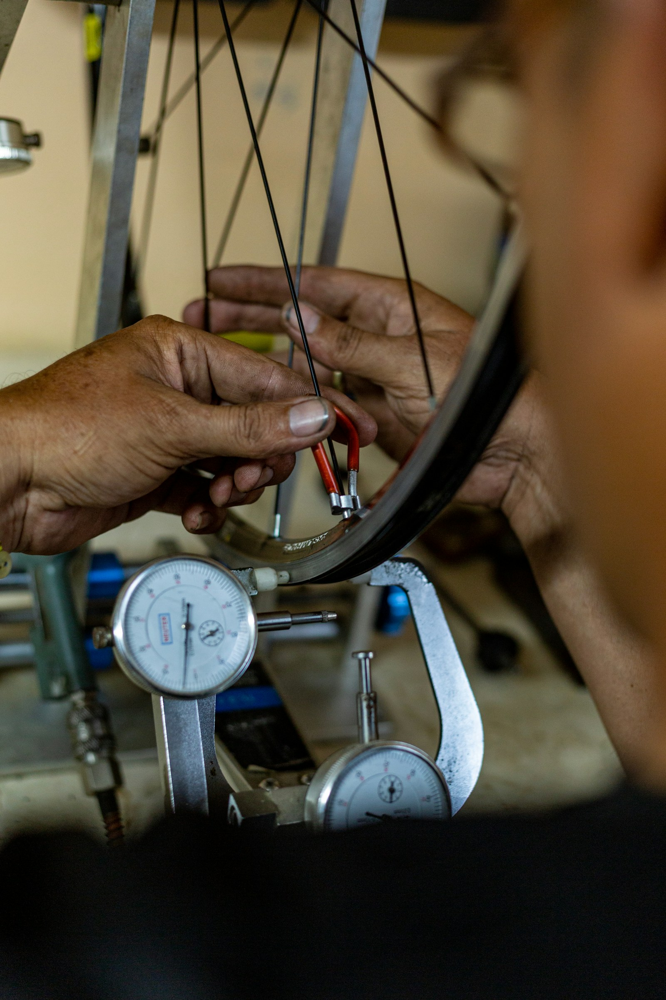
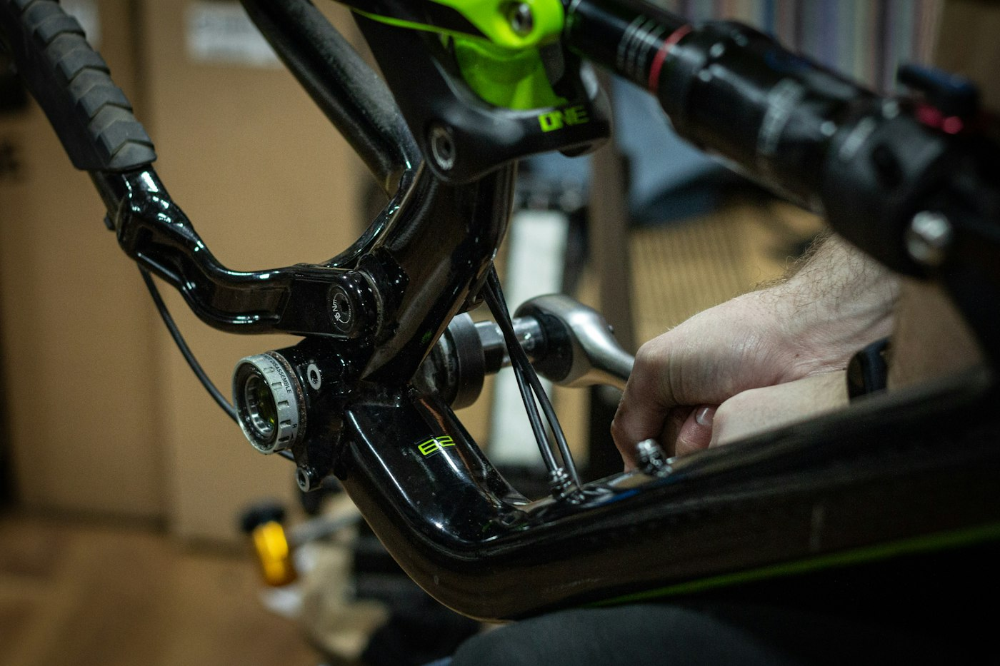
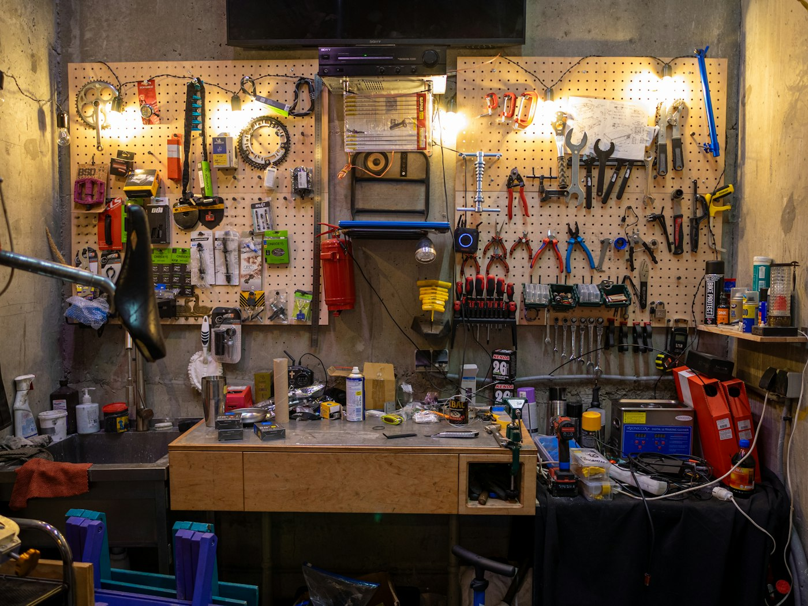

Смотрим
Проверяем велосипед и сверяем ваш список работ с реальным состоянием.
Честный сервис без загадочных пунктов в чеке. Выбирайте работы, смотрите смету и приезжайте в своё время.

01 / КАЛЬКУЛЯТОР
Выберите нужные работы. Смета обновится сразу; если не знаете, что именно сломалось, начните с диагностики.
02 / КАК РАБОТАЕМ
Проверяем велосипед и сверяем ваш список работ с реальным состоянием.
До замены деталей рассказываем, что нужно и сколько это стоит.
Чиним, настраиваем и тестируем перед выдачей — вместе с коротким отчётом.

03 / ЗАПИСЬ
Выберите удобное окно и сохраните запись на своём устройстве. До подтверждения мастером это личный план визита.

04 / КОРОТКО О ВАЖНОМ
Можно, если мастер свободен. Запись помогает выделить время именно на ваш велосипед и нужные работы.
Нет. На сайте указана стоимость работы. Если понадобятся детали, мастер назовёт варианты и цену до установки.
Калькулятор показывает время работы мастера. При нескольких работах или поиске запчастей срок может измениться.
Да, с механическими узлами и базовой диагностикой. Сложный ремонт электроники обсуждаем отдельно после осмотра.